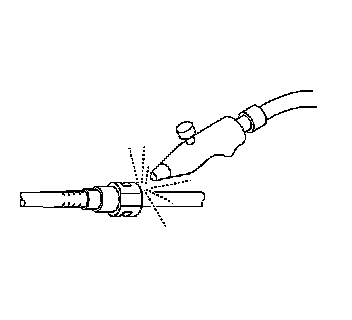
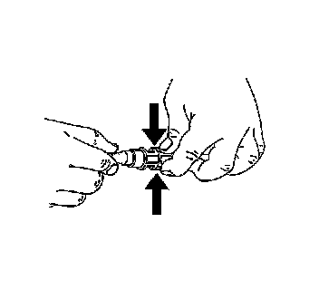
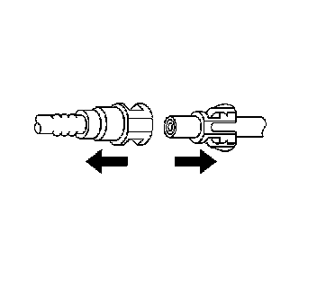
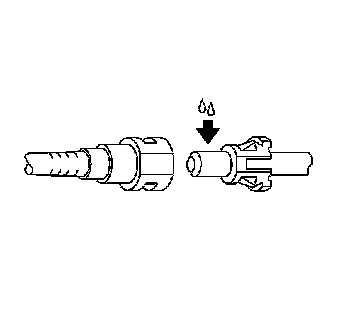
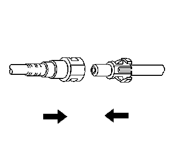
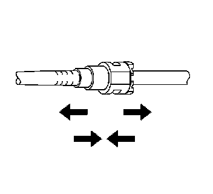

Plastic Collar Quick Connect Fitting Service
Plastic Collar Quick Connect Fitting Service
Removal Procedure

1. Relieve the fuel system pressure. Refer to Fuel Pressure Relief (With CH 48027) (Fuel Pressure Relief (With CH 48027))Fuel Pressure Relief (Without CH 48027) (Fuel Pressure Relief (Without CH 48027)) .
Caution: Wear safety glasses when using compressed air in order to prevent eye injury.
2. Blow dirt out of the fitting using compressed air.

3. Squeeze the plastic tabs of the male end connector.

4. Pull the connection apart.
Notice: Use an emery cloth in order to remove rust or burrs from the fuel pipe. Use a radial motion with the fuel pipe end in order to prevent damage to the O-ring sealing surface.
5. Wipe off the male pipe end using a clean shop towel.
6. Inspect both ends of the fitting for dirt and burrs.
7. Clean or replace the components as required.
Installation Procedure
Caution: In order to reduce the risk of fire and personal injury, before connecting fuel pipe fittings, always apply a few drops of clean engine oil to the male pipe ends.
This will ensure proper reconnection and prevent a possible fuel leak.
During normal operation, the O-rings located in the female connector will swell and may prevent proper reconnection if not lubricated.

1. Apply a few drops of clean engine oil to the male pipe end.

2. Push both sides of the quick-connect fitting together in order to cause the retaining tabs/fingers to snap into place.

3. Pull on both sides of the quick connect fitting in order to make sure the connection is secure.